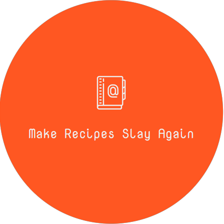
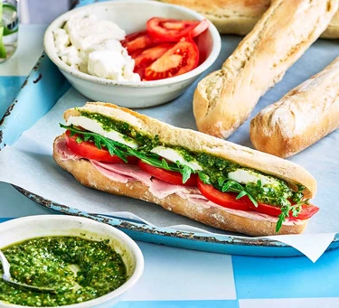

Make Recipes Slay Again
Panuozzo Sanwich Recipe

| Ingredients | How to? |
|---|---|
| For the dough
✭ 300g strong white bread flour, plus extra for dusting ✭ 3g (about half a sachet) fast-action dried yeast ✭ 1 tbsp olive oil For the filling ✭ 1 tomato, halved and sliced ✭ 4 slices cooked ham ✭ 150g mozzarella ball, sliced and seasoned ✭ small handful of rocket (optional) ✭ 6 tbsp pesto (see below for the recipe) ✭ 1 tbsp olive oil |
STEP 1 Put the flour in a large bowl, then stir in the yeast and a large pinch of salt. Make a well in the centre, pour in 175ml warm water and the oil and bring together with a wooden spoon to make a soft, fairly wet dough. Turn out onto a lightly floured surface and knead for 5-8 mins until smooth. Divide the dough into four balls and arrange on a floured tray, well spaced apart. Cover with a tea towel and set aside for about 40 mins-1 hr until doubled in size. STEP 2 Heat the oven to 240C/220C fan/gas 8 and put a baking tray in the oven to heat up. Roll the dough balls out on a floured surface into long baguette sticks about 22-25cm long, place on the hot tray and bake for 10-12 mins until puffed up and golden, then leave to cool. Can be made a few hours ahead of baking. STEP 3 To assemble, split the bread down one side and neatly layer in the tomato, ham, mozzarella and rocket, if using. Mix the pesto with the olive oil, drizzle over, halve and serve. |